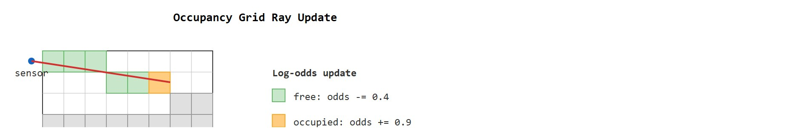
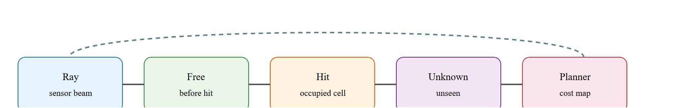

For Occupancy grids and voxel maps, geometry earns its place when it changes reachability, clearance, grasping, exploration, or recovery in the log.
A Patient Embodied AI Agent
This section builds on the log-odds update rule introduced in section 8.6 and the point-cloud fundamentals from section 28.2. The occupancy representation developed here feeds directly into the navigation stack in section 30.4 and informs the localization uncertainty margins discussed in section 29.3. Readers who need object-level reasoning beyond free/occupied cells will find that connection extended in section 29.4, where semantic labels are layered onto the same voxel backbone.
A warehouse robot traveling at 1.5 m/s has roughly 600 milliseconds to decide whether the corridor ahead is safe. It cannot reparse a raw point cloud in that window; it needs a persistent, queryable answer already waiting in memory. Occupancy grids and voxel maps exist precisely for this moment: they convert streaming sensor rays into a three-state spatial memory (free, occupied, unknown) that planners can query in microseconds. As robots move into cluttered real-world environments, getting this representation right separates systems that recover gracefully from unexpected obstacles from ones that freeze or collide. You will build the log-odds update rule, set resolution and decay tradeoffs, and wire the resulting map directly into a cost-map planner.
A robot moving through a warehouse aisle must answer one question faster than it is traveling: "is the next meter of space safe to enter?" Point clouds give dense geometry but no persistent memory. Camera images give texture but no direct answer about occupancy. A planner needs a structure it can query cell-by-cell in microseconds, one that accumulates evidence across many sensor sweeps rather than discarding it, and one that distinguishes "confirmed free," "confirmed occupied," and "never seen" as three distinct answers. Occupancy grids and voxel maps exist specifically to provide that structure. The log-odds update rule accumulates this evidence, resolution and decay parameters trade against a latency budget, and the resulting three-state map (free, occupied, unknown) feeds a cost-map planner. As Figure 28.4A illustrates, the central discipline is that unknown space is never silently treated as free.
For occupancy and voxel maps, track resolution, decay, inflation, unknown-space policy, and update latency. The robot evidence is not map beauty; it is whether the planner used the map to avoid collision or request exploration.
For occupancy and voxel maps, track resolution, decay, inflation, unknown-space policy, and update latency. The robot evidence is not map beauty; it is whether the planner used the map to avoid collision or request exploration. Treat the representation as a typed state estimate, not as a visualization.
Each of these five terms is defined in the order it is used below: the log-odds update and resolution tradeoffs come first under Mathematical Core, inflation and decay follow once the update rule is in place, and unknown-space policy and update latency close out the section once both a representation and a forgetting mechanism exist to apply a policy to.
For Occupancy grids and voxel maps, the representation is embodied only when it changes an admissible action, safety margin, exploration request, or recovery path.

Figure 28.4.2 shows the ray traversal itself: the sensor cell, the free cells it passes through, the occupied hit cell, and the surrounding unknown cells that remain unlabeled. Figure 28.4.1, immediately below, should be read as the Occupancy grids and voxel maps handoff diagram: the ray, the free cells before the hit, the hit cell, the surrounding unknown space, and the planner that consumes the cost map are each separate failure points.

Occupancy mapping usually updates log odds so repeated evidence accumulates without probabilities saturating too quickly.
$\ell_t(m_i)=\ell_{t-1}(m_i)+\log\frac{P(m_i\mid z_t)}{1-P(m_i\mid z_t)}-\ell_0$, where $\ell_t(m_i)$ is the log-odds of cell $m_i$ being occupied at time $t$, $P(m_i\mid z_t)$ is the probability of occupancy given the current sensor measurement $z_t$, and $\ell_0$ is the prior log-odds subtracted to avoid double-counting the initial belief.
Think of log-odds accumulation like seasoning a dish by taste rather than by fixed recipe. Each time you add a pinch of salt you are not multiplying by some fixed factor; you are adding a small increment to the running total of saltiness. Too many increments in one direction and the dish is ruined (saturated), so you clamp the total between a floor and a ceiling. The clamping thresholds on log-odds work exactly the same way: they stop a cell from becoming so "certain" that a dozen contradicting observations cannot wash it clean, just as a cook stops adding salt well before the dish becomes inedible.
The log-odds value $\ell_t$ increases for occupied evidence and decreases for free-space evidence. This distinction enforces the three-state epistemic contract: unknown is not free; it is a separate epistemic state that planners should treat according to task risk.
What happens when a planner's map says "clear" but the robot's shoulder clips a shelf at full speed? The answer is almost always the same: the map treated the robot as a point mass with no physical width. A map that knows the space but not the body navigating it is geometry without consequence.
Inflation matters because a planner that treats the robot as a point mass will route it through gaps it cannot physically fit through. A real robot occupies volume. Every cell within one body-radius of an obstacle must be marked forbidden before the path search begins. Without inflation, the planned path may graze a wall or shelf by centimeters, leaving no margin for localization error or wheel slip. The consequence on hardware is contact: not a planning artifact but a physical collision. Inflation turns a geometry measurement into a reachability constraint that accounts for body size.
Mechanically, inflation is a morphological dilation, where the obstacle region is grown outward by a fixed radius rather than resized or reshaped: the planner convolves the binary obstacle layer with a disc (2D) or sphere (3D) sized to the robot's largest cross-section, marking every cell within that radius of an obstacle as forbidden or high-cost. ROS 2 Nav2 ships this as the inflation layer plugin, where inflation_radius sets the hard-stop boundary and cost_scaling_factor tunes how cost decays past it (this is a spatial cost falloff with distance from the obstacle, unrelated to the time-based log-odds decay discussed later). The decay gives the optimizer a gradient that pulls paths away from obstacles rather than merely skirting them.
When using OctoMap, set setClampingThresMin(0.12) and setClampingThresMax(0.97) before inserting any point cloud. Without these bounds, log-odds values saturate: a cell that reaches the default maximum probability of 0.971 will not revert to free even after many consistent free-space rays, which causes ghost obstacles to linger long after a moved object is gone. Tighter clamping speeds up decay at the cost of requiring more consistent evidence to mark a cell occupied, so choose based on whether your environment changes faster than your sensor update rate.
Clamping tunes how a single representation forgets; the next decision is which representation to reach for in the first place.
Clamping is not the only forgetting mechanism promised above: a separate decay policy periodically nudges every cell's log-odds back toward zero (unknown) on a fixed schedule, independent of new evidence, so that a cell nobody has re-observed in, say, 30 seconds gradually loses certainty rather than staying frozen at whatever value the last sweep produced. Clamping bounds how confident a cell can become from repeated evidence; decay bounds how long that confidence persists without fresh evidence. Systems tracking moving obstacles typically need both.
| Design Choice | Use When | Control Risk |
|---|---|---|
| 2D grid | Ground robots on mostly flat floors | Cannot represent overhangs or drone clearance. |
| 3D voxel map | Drones, manipulation, cluttered interiors | Memory and update cost grow quickly. |
| Truncated Signed Distance Field (TSDF) or Euclidean Signed Distance Field (ESDF) | Surface reconstruction and planning distances | Truncation and integration choices affect thin objects. |
A common assumption is that finer voxel resolution always produces a better map and therefore safer robot behavior. This assumption fails in embodied AI because resolution directly determines update latency and memory footprint. Halving cell size in 3D increases memory by a factor of eight and multiplies ray-casting cost by the same factor. To make that concrete: a 10 m x 10 m x 3 m room at 1 cm resolution requires 300 million voxels, while the same room at 5 cm resolution requires only 480,000 voxels. That is a 625x reduction in memory for a factor-of-five change in cell size. Suppose a 1 cm voxel map misses its planning deadline because the CPU cannot finish the update within the sensor period. That map is strictly worse than a 5 cm map that delivers a valid cost map in time for the planner to act. The correct mental model treats resolution as a latency budget constraint: choose the coarsest resolution that still distinguishes the robot body from the smallest obstacle the task requires avoiding, then verify that the full update pipeline completes within the available time window before the robot commits to a motion.
Having chosen a resolution that fits the latency budget, the next step is to see the update rule that fills each of those cells in action.
Code Fragment 28.4.1 performs a tiny log-odds update for free and occupied cells along one range ray. The same idea powers larger occupancy and voxel maps.
# Apply one log-odds occupancy update along a range ray.
# Free cells decrease, the hit cell increases, and unknown cells remain unchanged.
import numpy as np
log_odds = np.zeros(6)
free_cells = [0, 1, 2, 3]
hit_cell = 4
log_odds[free_cells] += -0.4
log_odds[hit_cell] += 0.9
prob = 1 / (1 + np.exp(-log_odds))
print(np.round(prob, 2))The expected output shows cells 1 through 4 moving toward free space, cell 5 accumulating occupied evidence, and cell 6 staying unknown at 0.50. A planner should therefore interpret this vector as "one likely obstacle, several cleared cells, and one unobserved cell," not as a complete map.
-0.4 free-space decrement, cell 4 receives the +0.9 occupied-space increment, and cell 5 is never touched, so it stays at probability 0.50 to represent unknown space.Trace one cell that the sensor reports as occupied on three consecutive sweeps, with occupied increment $+0.9$ and starting log-odds $\ell_0 = 0$ (probability $0.50$). Sweep 1: $\ell = 0 + 0.9 = 0.9$, so $p = 1/(1+e^{-0.9}) = 0.71$. Sweep 2: $\ell = 0.9 + 0.9 = 1.8$, so $p = 1/(1+e^{-1.8}) = 0.86$. Sweep 3: $\ell = 1.8 + 0.9 = 2.7$, so $p = 1/(1+e^{-2.7}) = 0.94$. Now suppose the object moves away and the cell is seen as free (increment $-0.4$) for the next two sweeps. Sweep 4: $\ell = 2.7 - 0.4 = 2.3$, $p = 0.91$. Sweep 5: $\ell = 2.3 - 0.4 = 1.9$, $p = 0.87$. Notice the asymmetry: it took three sweeps to climb to $0.94$ but it will take roughly seven free sweeps ($2.7 / 0.4 \approx 7$) to wash the cell back to $0.50$. That lag is exactly why a moved object can linger as a ghost obstacle, and why clamping bounds matter.
Occupancy grids are the right choice when the planner needs fast binary queries and persistent accumulation across sweeps. Switch to an Euclidean Signed Distance Field (ESDF) when the planner needs gradient information for smooth trajectory optimization, not just collision checks (an occupancy grid only answers "is this cell occupied," while an ESDF stores the distance to the nearest obstacle at every cell, so an optimizer can follow that distance's gradient to push a path smoothly away from clutter instead of just rejecting colliding waypoints). Switch to a mesh or TSDF when the task requires surface texture, thin-object fidelity, or photorealistic rendering. And switch to a semantic map when downstream decisions depend on object identity rather than raw geometry. The occupancy grid is not universally best; it is best when the consuming action is "is this cell safe to enter?"
OctoMap, OpenVDB-style voxel structures, ROS 2 cost maps, and simulator occupancy layers provide maintained implementations. The library route handles memory and ray integration, while the builder defines sensor models, inflation, and unknown-space policy.
Treating unknown cells as free is a planning choice, not a fact. It may be acceptable for exploration and unacceptable for high-speed navigation or human-adjacent robots.
A warehouse drone should inflate occupied voxels by its body radius and reserve an additional margin for localization uncertainty before accepting a path through shelving.
Amazon Robotics drive units and the Proteus autonomous mobile robot are reported to maintain 2D occupancy grids fused from floor-mounted fiducials (small printed markers at known warehouse positions that the robot's camera uses to correct its location estimate) and onboard LiDAR, a fusion pattern typical of warehouse AMR fleets more broadly, using the inflated cost map to route thousands of units through shared aisles without collision. The three-state distinction is operational, not academic: a cell marked unknown (a worker who just stepped in) triggers a stop-and-wait rather than the free-space speed the robot would use for a confirmed-clear lane.
Consider a representative case, illustrative rather than a documented vendor specification: a legged robot such as the Boston Dynamics Spot navigating a construction site might reasonably use OctoMap at 5 cm resolution. Each LiDAR sweep would cast on the order of 100,000 rays; free cells along each ray receive a log-odds decrement of about 0.4 and the hit cell receives an increment of 0.9, matching the Code Fragment values above. After three consistent sweeps a hit cell reaches probability 0.88, which crosses a typical planner's obstacle threshold. The inflation layer then expands that cell by the robot's shoulder width (roughly 0.5 m for a quadruped this size) before passing the cost map to the navigation stack. A pipeline built this way would need to run end-to-end in well under 100 ms to stay inside the latency budget for safe walking speed; whether a specific implementation hits that budget depends on the CPU, point count, and voxel count actually deployed.
For Occupancy grids and voxel maps, the perception result must answer what action changed, what uncertainty changed, and what log would reproduce the decision. Otherwise the output is still visualization, not embodied evidence.
For Occupancy grids and voxel maps, evaluate the representation inside the consuming action loop with calibration, frame transform, representation version, latency, selected action, and failure label.
For Occupancy grids and voxel maps, perturb exactly one geometric assumption, such as depth dropout, scale, occlusion, pose drift, motion, or calibration, then record the action change.
Language-conditioned semantic occupancy. Rather than marking cells free or occupied, systems now assign per-voxel semantic or open-vocabulary embeddings so a planner can query "is there a chair in this voxel?" as cheaply as a binary collision check. OpenOccupancy (Wang et al., 2023) and subsequent 2024 follow-ons from the Waymo and nuPlan communities push this toward camera-only, surround-view pipelines that replace LiDAR while matching its recall on occupancy benchmarks (as of 2024).
Foundation-model priors for sparse-view occupancy completion. Large vision transformers pretrained on internet-scale RGB video now act as geometric priors that hallucinate plausible occupancy behind occluders from a single RGB frame. UniOcc (2024, Tsinghua/CAIR) and OccWorld (Zheng et al., 2024) show that an autoregressive world model (a network trained to predict its own next output step by step, feeding each prediction back in as input for the following step) trained on nuScenes can predict the next-timestep 3D occupancy grid 200 ms ahead, giving the planner a look-ahead buffer without any additional sensor sweep.
Gaussian-splatting occupancy hybrids. 3D Gaussian Splatting (Kerbl et al., 2023) produces dense, photorealistic representations far faster than NeRF, and 2024-2025 work from ETH Zurich and MIT CSAIL maps the Gaussian ellipsoids directly onto a voxel occupancy layer: each Gaussian's opacity and radius contribute a soft occupancy vote, collapsing the gap between appearance and collision geometry without a separate reconstruction step.
So far: three independent research directions all push occupancy beyond binary free/occupied cells, semantic embeddings add object identity, foundation-model priors add look-ahead prediction, and Gaussian splatting adds photorealistic appearance, but all three still assume the map coordinate frame is static.
Open problem suitable for a PhD thesis: all three directions above assume the map coordinate frame stays fixed. Dynamic scenes with independently moving agents (pedestrians, forklifts) invalidate the static-world assumption that the log-odds update rule relies on. No current method robustly separates "occupied because an object was here 200 ms ago and moved" from "occupied because a wall is here," at sensor rates, in 3D, and without per-object instance segmentation running at the same frequency. A student who can extend the Bayesian evidence-decay model to handle rigid-body motion hypotheses without the segmentation oracle would address a core open gap.
Beginner (weekend): 2D occupancy grid navigator in PyBullet. Build a wheeled robot in PyBullet that maintains a 2D log-odds occupancy grid from a simulated laser scan and plans a path to a goal using ROS2 Nav2's cost-map interface. The key challenge is wiring the PyBullet sensor output into the ROS2 occupancy-grid message format so the existing Nav2 inflation layer handles obstacle expansion automatically.
Intermediate (1 to 2 weeks): Dynamic voxel map with OctoMap and Isaac Lab. Simulate a quadruped in Isaac Lab navigating a warehouse scene with moving obstacles, maintain a 3D OctoMap updated at 10 Hz, and compare paths planned under two unknown-space policies (treat unknown as free versus treat unknown as occupied) across 50 randomized episodes. The key challenge is keeping the OctoMap update and the Isaac Lab physics step synchronized without blocking the control loop, since ray-casting 100k returns per sweep at 5 cm resolution competes with the simulator's own tick budget.
Goal: build a 3D occupancy map from a depth sensor and observe how resolution and clamping bounds change what the map "remembers." Tools needed: Python with the octomap-python bindings (or the C++ OctoMap library with its example tools), plus any depth dataset with poses, for example a TUM RGB-D sequence or a few frames captured from an Open3D or PyBullet depth camera. What to vary: (1) the voxel resolution, sweeping 1 cm, 5 cm, and 20 cm; (2) the clamping thresholds via setClampingThresMin and setClampingThresMax; (3) the unknown-space policy when you query the tree (treat unknown as free versus as occupied). What to observe: record map memory footprint and insertion time per frame at each resolution, then move an object out of the scene and count how many free sweeps are needed before the vacated voxels flip from occupied back to free under each clamping setting. You should see the 625x memory jump between 5 cm and 1 cm predicted in the warning above, and the ghost-obstacle lag predicted in the step-through. Finish by casting a ray with castRay and confirming it stops at the first occupied voxel rather than passing through unknown space.
Section 28.5 replaces discrete voxels with a continuous neural radiance field, gaining photorealistic novel-view synthesis at the cost of needing an explicit geometry extraction step before the map can answer collision queries.
Open3D. Voxel grid documentation. https://www.open3d.org/docs/release/tutorial/geometry/voxelization.html
Shows practical voxel representations and conversions.
NVIDIA. Isaac ROS Visual SLAM documentation. https://nvidia-isaac-ros.github.io/repositories_and_packages/isaac_ros_visual_slam/index.html
Visual odometry context for maps that feed navigation.
Can you name the representation, the consuming action, the uncertainty or freshness field, and the failure label for Occupancy grids and voxel maps? If any one is missing, the section is not yet ready for a robot replay log.
Occupancy grids are powerful because they answer the planner's simplest question: is this space free, occupied, or still unknown?
Design an unknown-space policy for a drone inspecting a warehouse aisle. When should unknown be allowed, penalized, or forbidden?